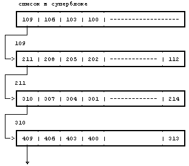
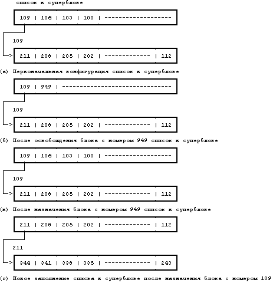

Когда процесс записывает данные в файл, ядро должно выделять из файловой системы дисковые блоки под информационные блоки прямой адресации и иногда под блоки косвенной адресации. Суперблок файловой системы содержит массив, используемый для хранения номеров свободных дисковых блоков в файловой системе. Сервисная программа mkfs ("make file system" - создать файловую систему) организует информационные блоки в файловой системе в виде списка с указателями так, что каждый элемент списка указывает на дисковый блок, в котором хранится массив номеров свободных дисковых блоков, а один из элементов массива хранит номер следующего блока данного списка.
Когда ядру нужно выделить блок из файловой системы (алгоритм alloc, Рисунок 4.19), оно выделяет следующий из блоков, имеющихся в списке в суперблоке. Выделенный однажды, блок не может быть переназначен до тех пор, пока не освободится. Если выделенный блок является последним блоком, имеющимся в кеше суперблока, ядро трактует его как указатель на блок, в котором хранится список свободных блоков. Ядро читает блок, заполняет массив в суперблоке новым списком номеров блоков и после этого продолжает работу с первоначальным номером блока. Оно выделяет буфер для блока и очищает содержимое буфера (обнуляет его). Дисковый блок теперь считается назначенным и у ядра есть буфер для работы с ним. Если в файловой системе нет свободных блоков, вызывающий процесс получает сообщение об ошибке.
Если процесс записывает в файл большой объем информации, он неоднократно запрашивает у системы блоки для хранения информации, но ядро назначает каждый раз только по одному блоку. Программа mkfs пытается организовать первоначальный связанный список номеров свободных блоков так, чтобы номера блоков, передаваемых файлу, были рядом друг с другом. Благодаря этому повышается производительность, поскольку сокращается время поиска на диске и время ожидания при последовательном чтении файла процессом. На Рисунке 4.18 номера блоков даны в настоящем формате, определяемом скоростью вращения диска. К сожалению, очередность номеров блоков в списке свободных блоков перепутана в связи с частыми обращениями к списку со стороны процессов, ведущих запись в файлы и удаляющих их, в результате чего номера блоков поступают в список и покидают его в случайном порядке. Ядро не предпринимает попыток сортировать номера блоков в списке.

Рисунок 4.18. Список номеров свободных дисковых блоков с указателями
Алгоритм освобождения блока free - обратный алгоритму выделения блока. Если список в суперблоке не полон, номер вновь освобожденного блока включается в этот список. Если, однако, список полон, вновь освобожденный блок становится связным блоком; ядро переписывает в него список из суперблока и копирует блок на диск. Затем номер вновь освобожденного блока включается в список свободных блоков в суперблоке. Этот номер становится единственным номером в списке.
На Рисунке 4.20 показана последовательность операций alloc и free для случая, когда в исходный момент список свободных блоков содержал один элемент. Ядро освобождает блок 949 и включает номер блока в список. Затем оно выделяет этот блок и удаляет его номер из списка. Наконец, оно выделяет блок 109 и удаляет его номер из списка. Поскольку список свободных блоков в суперблоке теперь пуст, ядро снова наполняет список, копируя в него содержимое блока 109, являющегося следующей связью в списке с указателями. На Рисунке 4.20(г) показан заполненный список в суперблоке и следующий связной блок с номером 211.
алгоритм alloc /* выделение блока файловой системы */
входная информация: номер файловой системы
выходная информация: буфер для нового блока
{
выполнить (пока суперблок заблокирован)
приостановиться (до того момента, когда с суперблока
будет снята блокировка);
удалить блок из списка свободных блоков в суперблоке;
если (из списка удален последний блок)
{
заблокировать суперблок;
прочитать блок, только что взятый из списка свобод-
ных (алгоритм bread);
скопировать номера блоков, хранящиеся в данном бло-
ке, в суперблок;
освободить блочный буфер (алгоритм brelse);
снять блокировку с суперблока;
возобновить выполнение процессов (после снятия бло-
кировки с суперблока);
}
получить буфер для блока, удаленного из списка (алго-
ритм getblk);
обнулить содержимое буфера;
уменьшить общее число свободных блоков;
пометить суперблок как "измененный";
возвратить буфер;
}
|
Рисунок 4.19. Алгоритм выделения дискового блока
Алгоритмы назначения и освобождения индексов и дисковых блоков сходятся в том, что ядро использует суперблок в качестве кеша, хранящего указатели на свободные ресурсы - номера блоков и номера индексов. Оно поддерживает список номеров блоков с указателями, такой, что каждый номер свободного блока в файловой системе появляется в некотором элементе списка, но ядро не поддерживает такого списка для свободных индексов. Тому есть три причины.
- Ядро устанавливает, свободен ли индекс или нет, проверяя: если поле типа файла очищено, индекс свободен. Ядро не нуждается в другом механизме описания свободных индексов. Тем не менее, оно не может определить, свободен ли блок или нет, только взглянув на него. Ядро не может уловить различия между маской, показывающей, что блок свободен, и информацией, случайно имеющей сходную маску. Следовательно, ядро нуждается во внешнем механизме идентификации свободных блоков, в качестве него в традиционных реализациях системы используется список с указателями.
- Сама конструкция дисковых блоков наводит на мысль об использовании списков с указателями: в дисковом блоке легко разместить большие списки номеров свободных блоков. Но индексы не имеют подходящего места для массового хранения списков номеров свободных индексов.
- Пользователи имеют склонность чаще расходовать дисковые блоки, нежели индексы, поэтому кажущееся запаздывание в работе при просмотре диска в поисках свободных индексов не является таким критическим, как если бы оно имело место при поисках свободных дисковых блоков.

Рисунок 4.20. Запрашивание и освобождение дисковых блоков
Предыдущая глава || Оглавление || Следующая глава